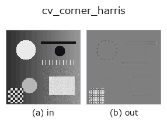

edges op• Datenarten: image → image
• Aufruf: fullseye.apply(img, "cv_corner_harris", a=0.5, b=0.5) (das 2-D-Modell ist ein Bild plus zwei skalare Regler a,b∈[0,1])
• HALCON-Äquivalent: points_harris (Bedeutung und Parameter sind in der HALCON-Referenz nachzulesen)

*Die Abbildung ist die tatsächliche Ausgabe auf einer synthetischen 128×128-Eingabe. Links Eingabe, rechts Ausgabe. Punktwolken als Draufsicht-Streudiagramm (Helligkeit = z), 1-D-Reihen als Linie, Volumen als Maximum-Projektion entlang z, Videos als mittleres Bild, komplexe Bilder als Betrag; Rückgabewerte, die kein Bild ergeben, werden als Werte gezeigt.*
*Die Ausgabe ist in einer viridis-artigen Falschfarbe dargestellt (dunkles Violett = klein, Gelb = groß), damit ein Feld von Größen — Abstand, Phase, Orientierung, Tiefe — lesbar ist.*
*Regler a ändert die Ausgabe nicht (gemessen: identisch bei 0,1 / 0,5 / 0,9).*
*Regler b ändert die Ausgabe nicht (gemessen: identisch bei 0,1 / 0,5 / 0,9).*
Auf anderen Bildern (synthetische Szene / Foto / Münzen. Obere Reihe: Eingaben, untere Reihe: deren Ausgaben. Regler auf Standard):
▸ cv_corner_harris: andere Eingaben (Doku-Website)
*Die 4. Spalte ist eine Farb-Eingabe (H,W,3). Dieser Op verarbeitet Farbe, ohne Kanäle zu vermischen (er faltet den Farbkanal nicht als dritte Raumachse).*
Harris-Eckenantwort (OpenCV-Implementierung). Basiert auf demselben Harris-Konzept wie sk_corner_harris, wobei die OpenCV-Version dies mit festen Parametern wie der Blockgröße für Gradientenberechnung und Glättung berechnet.
Entspricht HALCONs points_harris (Näherung). Die Implementierung ist cv2.cornerHarris(v, blockSize=2, ksize=3, k=0.04), mit signed01 auf [0,1] abgebildet —— blockSize (Nachbarschaftsgröße), ksize (Sobel-Apertur) und k (Harris' freier Parameter) sind alle fest. a, b werden nicht verwendet —— anders als die skimage-Version gibt es keinen Mechanismus zum Variieren der Skala; es ist die reine Harris-Antwort.
Vergleichbarkeit der Werte (gemessen): Die Ausgabe wird auf das Maximum des jeweiligen Bildes normiert (das Ausgabemaximum ist stets 1.0, und eine Skalierung der Eingabe lässt die Ausgabe unverändert). Werte sind daher nicht bildübergreifend vergleichbar — ein Merkmal gleicher Stärke erhält je nach dem stärksten Merkmal im Bild einen anderen Wert, und in einem Bild mit nur schwachen Merkmalen wird das Rauschen auf 1.0 angehoben. Für einen Vergleich über Bilder hinweg auf eine gemeinsame Referenz umskalieren.
• Leitfaden zur Familie gallery2d_edges
• Katalog der Beispieldaten (Download-URLs / Lizenzen) — 2-D nutzt skimage.data (BSD/Public Domain) plus synthetische Bilder, 3-D nennt Download-URLs echter Datenquellen (Stanford, PDS, …).
• Herkunft und Literatur der Operatoren — die Quellen der Forschung/Verfahren, auf denen diese Operatorfamilie beruht.
• Der kanonische Algorithmus (Autor, Jahr) und seine Anwendungen stehen im Familienleitfaden oben.
Das Programm unten ist nachweislich lauffähig (gleiche Eingabe wie die Abbildung). In der Studio-Hilfe wird dieser Block zu Schaltflächen, die es sofort laden und ausführen.
cv_corner_harris 0.40 0.50
▸ Diese Pipeline laden · Laden & ausführen
• gallery2d_edges — py -3.11 examples/gallery2d_edges.py
image als Eingabe)identity · gaussian · mean_box · bilateral · unsharp · median · min_filter · max_filter
edges)sobel_mag · prewitt_mag · roberts_mag · dog · edge_transition_width · grad_dir · log · corner_response
*Provenance: ops.py — 2D Operator-Registry. Diese Notiz wird von tools/opdocs.py md erzeugt (nicht von Hand bearbeiten).*
© 2026 Kazufumi Furuse — Fullseye operator documentation. Licensed under Apache-2.0.